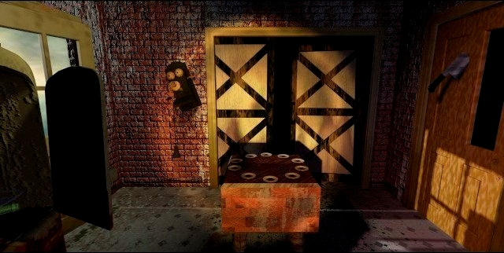
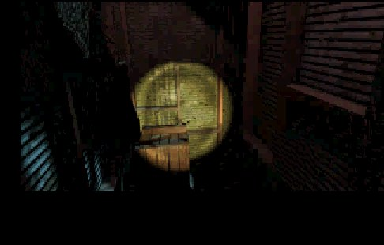

"Hello, Chuck."
A behind the scenes look can be found here. You know, Greame Devine and Rob Landeros wanted the seventh guest to be in black and white. As you know in the end, they didn't. But in the 11th hour they added a funny option, Spooky mode. If you go to the options screen in the 'welcome' screen, you can select 'normal' animation and 'spooky'. If you choose spooky, you will see that everything is in black and white! Except the items in the house. Try it, it gave me a laugh.Here you see a screenshot in spooky mode.
All the scenes combined are two and a half hours of film: 66 outside the house, 15 inside the house and 69 minutes of animation.
An actor in a bar in the town where they shot the movie heard the screams from an actrice from a mile away. Nobody called the police (Rob Landeros: With regard to that, it's just like New York).
Chuck had to walk around with a 'dead body' on his shoulder, somebody did call the police. The prop manager had to explain to the police that they were shooting a movie.
The lion in the scene with Robin, was a baby lion, when it jumped they stretched the picture.
How did they combine the blue screen + the actors in the game? This is a simplified explanation:
First the designer made a picture of the background of the scene, for instance the kitchen. He would give that picture to the director of the movie. The camera replaces the blue it 'sees' with the picture of the background. Now the director knows how it's going to look like and checks if the actor blends in, it would look very weird if the actor's hand goes through the wall of the kitchen. Now the director can see if that is the case or not. When everything is okay, the scene with the blue screen is send to Trilobyte. There they do the same, they take the blue background and the kitchen background and place it un top. Now the actor is visible (he's not blue) and the kitchen background (placed over the blue parts) is visible.
The blue screen studio was an old warehouse, they changed it so that it could be used as a studio.
The movie was shot in southern Oregon.
But there is more on this page, want to see some never before seen shots from the 11th hour? Well, whatever you want here it is.

This file is an avi that shows one of the secret passages in the mansion.
I would like to thank Robert Stein III for his time and for giving me the upportunity to use these files.